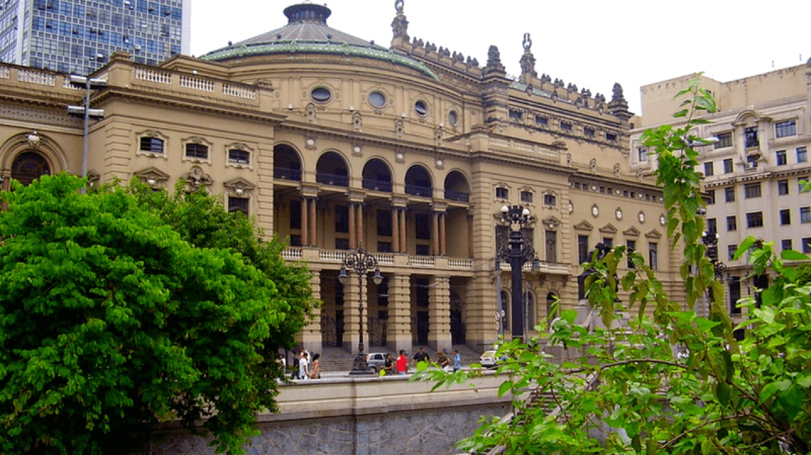

O Governo de São Paulo conta com uma estrutura organizacional qualificada que, sob coordenação
direta do governador do Estado, é responsável pelas políticas relacionadas aos diferentes setores da
administração pública estadual.

Gabinete
Governador do Estado de São Paulo, o paulistano João Doria tem
64 anos, é casado com a artista plástica Bia Doria e pai de três filhos.
Tanabi (SP). É casado e tem três filhos. Vice-governador do Estado
de São Paulo, é também secretário de Governo.

Paulo. Atuando em causas humanitárias, ela participa de projetos
sociais com o Cardeal Dom Odilo Scherer, Arcebispo de São Paulo.
Estrutura
Secretárias
Empresas
Autarquias
Fundações
Prefeituras Paulistas
Poder Público